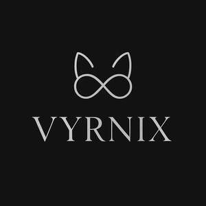

Trade Mark Journal No.2025/037 12 September 2025
UK00004257894 2 September 2025 (18,20,21,28)

- Class 18
- Leather leashes; Rucksacks; Shoulder belts [straps] of leather; Imitation leather; Cases of leather or leatherboard; Clothing for pets; Casings, of leather, for plate springs; Collars for animals; Daypacks; Garments for pets; Bags for carrying pets; Pet clothing; Pet leads; Clothing for domestic pets; Raincoats for pet dogs; Satchels; Pet hair bows; Pets (Clothing for -); Dog collars; Collars for pets.
- Class 20
- Beds for household pets; Pet cushions; Cushions for lining pet crates; Animal housing and beds; Beds for animals; Cat beds; Dog beds; Grooming tables for pets; Inflatable pet beds; Pet crates; Pet furniture; Pet houses; Playhouses for pets; Portable beds for pets; Divan beds; Straw mattresses; Sleeping mats; Lounge chairs; Beds, bedding, mattresses, pillows and cushions; Armchairs.
- Class 21
- Litter boxes for pets; Drinking troughs; Combs for animals; Large-toothed combs for the hair; Scrubbing brushes; Electric combs; Cages for household pets; Animal grooming gloves; Pet feeding bowls; Pet feeding bowls, automatic; Indoor terrariums for animals; Toothbrushes for pets; Litter trays for pets; Drinking bottles; Glasses [drinking vessels]; Brushes; Household utensils for cleaning, brushes and brush-making materials; Litter scoops for use with pet animals; Scoops for the disposal of pet waste; Scoops for the disposal of animals excrement.
- Class 28
- Toys for pets; Flying discs [toys]; Scale model kits [toys]; Plush toys with attached comfort blanket; Toy glow stick bracelets for parties; Climbing frames (play things); Novelty noisemaker toys for parties; Pinball games machines [toys]; Whack-a-mole toys for pets; Toy figurines; Parlour games; Pet toys; Toys and playthings for pets; Toys and playthings for pet animals; Toys for translating feelings of pets; Toys for animals; Spinning fidget toys; Inflatable toys; Plastic toys; Masks (Toy -).
Zhongshan Yunqilin Trading Co., LTD
Representative: SHENZHEN ZHONG GANGXING SHUNLI INTELLECTUAL PROPERTY AGENCY CO., LTD